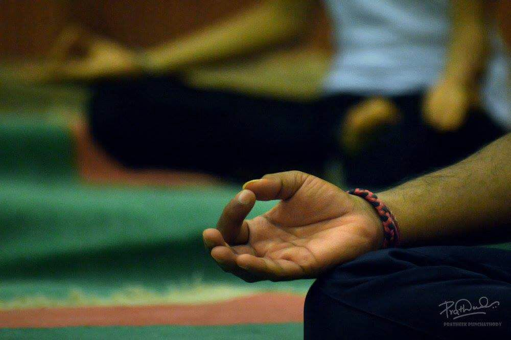

article
Yoga is not a work-out it is a work-in, and this is the point of spiritual practice to make us teachable to open up our hearts and focus our awareness so that we can know what we already know and be who we already are.
Meditation brings wisdom; lack of meditation leaves ignorance. Know well what leads you forward and what holds you back, and choose the path that leads to wisdom
